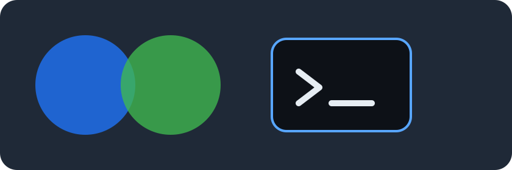

Repository-backed fixture
Dependencies can stay with the document.
This page exercises repository-relative CSS, nested stylesheet imports, an image, a font, and a classic script without making a network request from the sandbox.
Fixture loaded
Resolved resource checks
- Stylesheet: loaded from a repository-relative link.
- Nested import: loaded through a relative CSS
@import. - Image: loaded through a repository-relative reference and a CSS
../reference. - Font: referenced from a CSS
@font-facerule. - Classic script: enabled only when the capability is on.

The repository script has not run.